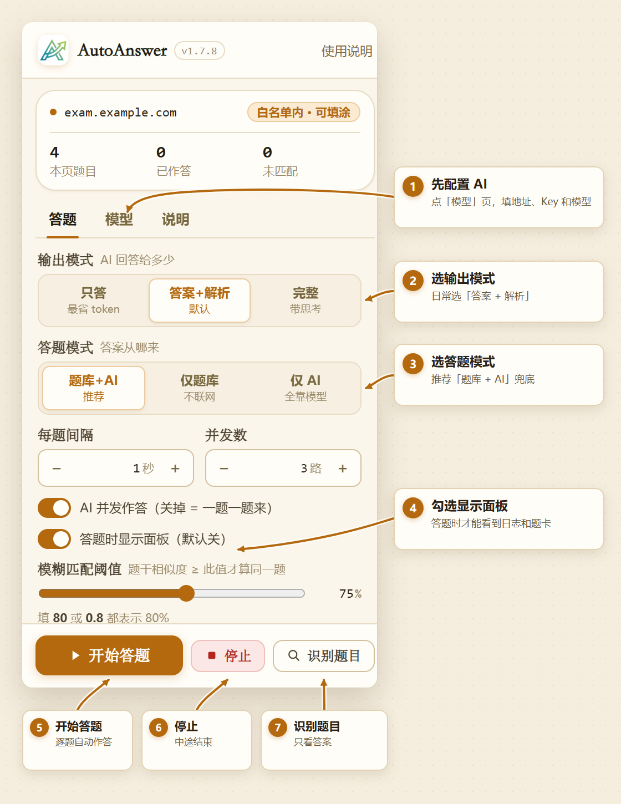
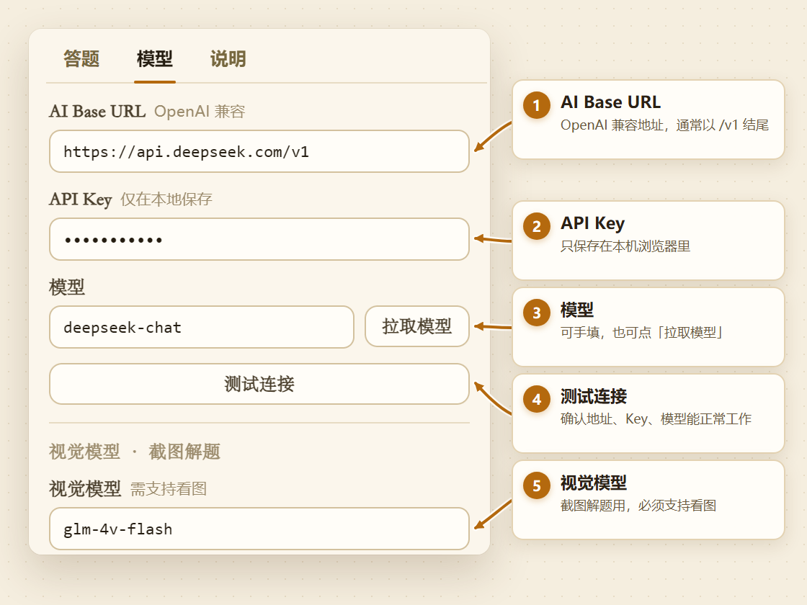
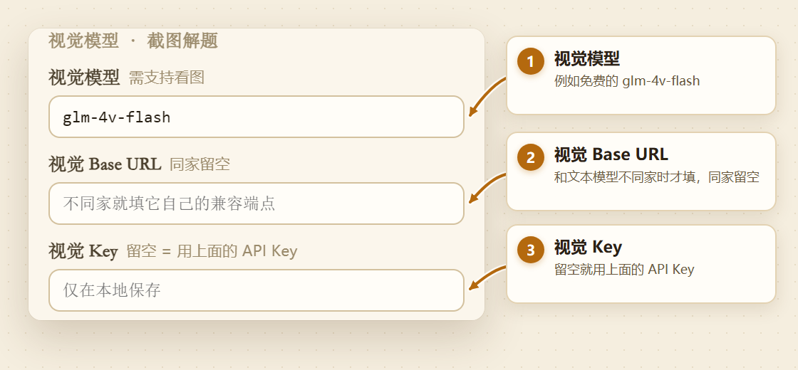
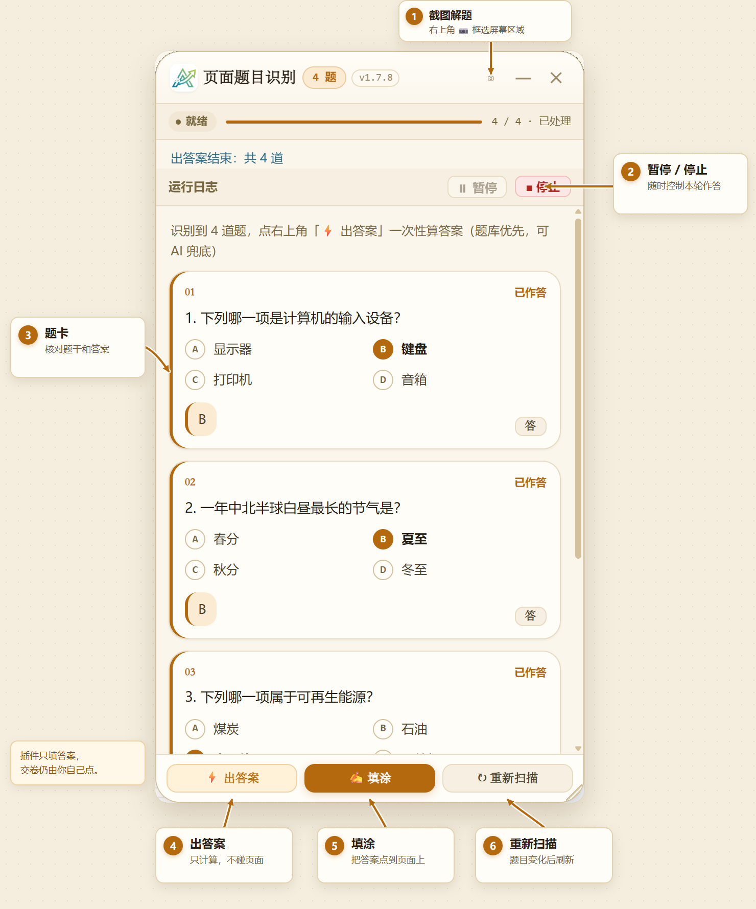

当前版本不再拦截、也不再二次确认页面上的提交/交卷操作；如果页面本身有确认框，按页面提示操作即可。
作答结束时页面右下角会出现一条提示：「已填 N 题，还有 M 道没答上，请自己点提交」， 点它可以打开面板看未答清单。这条提示与「答题时显示面板」开关无关，默认就会显示。
判据：只要这一份作答会被打分、被记录、被当作证据，或需要证明是你本人独立完成的，就不要用。无法判断时，视为不允许。
· 请只在你有权作答的页面上使用；
· 正式考试、在线测评、监考环境请勿使用；
· 是否合规由你所在院校的规定与平台服务条款决定，插件无从判断，作者也不代为判断；
· 因使用本插件导致的任何后果（平台封禁、成绩作废、学校处分等）由使用者自行承担；
· 插件不会、也不能替你交卷——提交按钮始终由你本人点击。
完整条款（责任承担、担保排除、题库数据授权切割、再分发建议）见 免责声明（仓库
DISCLAIMER.md）。
弹窗本体只保留简短提示，需要了解「为什么这么设、会影响什么」时看这份。
图文教程：从配置到作答
下面的截图都来自真实插件界面，图上的编号就是操作顺序。点击图片可以看大图。

第 1 步：填 AI 配置（用 AI 模式时）
点弹窗顶部的「模型」页，按图 2 填写。填完点「测试连接」，能连上再开始答题。只用题库、不调 AI 时可以跳过。

/v1 结尾；② 填自己的 API Key；
③ 可手填模型，也可点「拉取模型」；④ 点「测试连接」确认能连上；
⑤ 截图解题要单独填视觉模型。
视觉模型和文本模型不是同一家时，把「模型」页往下滚，按图 3 填视觉 Base URL 和视觉 Key；同一家留空即可。

第 2 步：开始答题或只看答案
- 自动作答：回「答题」页，确认答题模式为「题库 + AI」，点「开始答题」。插件逐题填涂，不会交卷。
- 只看答案：点「识别题目」打开页面右侧的识别面板，答案只显示在面板里，不碰页面。
- 中途控制：点「暂停」停在原地，点「停止」结束本轮；停止会中断正在等待的请求。
第 3 步：在识别面板里出答案、填涂或截图

面板可以拖动、缩放，也可以最小化成悬浮球（悬浮球上显示图标和题目数，点一下即可展开）。关闭面板不会停止正在进行的作答，要停请点面板里的「暂停 / 停止」或弹窗里的「停止」。
一、输出模式（AI 回答给多少）
控制 AI 回复里到底给多少内容。三档：
| 模式 | 模型返回什么 | 思考模式 | 适用场景 |
|---|---|---|---|
| 只输出答案 | 只有选项字母 / 填空内容，一个字的解释都没有 | 关 | 刷题、只想快点填完，最省 token；但答错时看不出原因 |
| 答案 + 解析（默认） | 第一行答案，空一行后一段简明解析（≤150 字） | 关 | 日常默认；答错时能看懂为什么 |
| 完整功能 | 第一行答案，空一行后逐项详细解析（覆盖每个选项） | 开 | 难题、需要推理过程；最慢最费 token，但正确率最高 |
使用上的几个约定
- 答案和解析分开。填涂只使用答案；解析仅供你阅读，即使解析里出现「A 选项错误」这类字样，也不会被当成答案勾选。
- 思考过程单独显示。「完整功能」模式下，题卡会多出一个「🧠 思考过程」块，思考内容不会混进答案，也不会写进页面。
- 平台不支持思考时自动降级。插件会改按普通模式作答，并在题卡上提示，不会让整道题失败。
与「自动填涂」的关系
这个开关只影响 AI 作答；题库命中的题本来就只有答案，与它无关。面板卡片会显示解析，但自动填涂始终只取答案，解析不会污染填涂。
二、答题模式
| 模式 | 行为 |
|---|---|
| 题库 + AI 兜底（推荐，默认） | 先查题库，匹配不到的题发给大模型 |
| 题库匹配 | 只查题库，不调用 AI |
| 仅 AI | 全部题目都发给大模型 |
题库从哪来（三个来源，按优先级依次尝试）
| 优先级 | 来源 | 怎么用 |
|---|---|---|
| ① | 弹窗里的「题库地址」 | 手填题库的站点地址。填了就优先用它 |
| ② | 插件目录里的 bank/ | 把题库包解压到 extension/bank/ 即可，不需要配置。仓库不自带题库，安装步骤见 extension/BANK.md |
| ③ | 当前网页自带的 ./bank/ | 页面自己带题库时的兜底路径，什么都不用配 |
题库请求由插件在后台发出，不受网页本身的跨域设置影响。
三、每题间隔（秒）
取值范围 0~30，可以是小数（0.5）。
- 0 = 不额外等待 —— 越快越好时用；但接口限流风险最高
- 默认 1 秒 —— 稳妥选择
- 并发开启时 —— N 个 worker「各歇各的」，总耗时约等于「最慢那批」而非「全部之和」
这个值对「开始答题」和面板上的「⚡ 出答案 / ✍ 填涂」都生效。
四、AI 并发作答
把「问 AI」这一步并行化：默认最多同时向接口发 3 个请求（可调 1~5）。148 道题的卷子在「仅 AI」模式下能从十几分钟缩到几分钟。
为什么答案不会乱
把「取答案」和「写页面」拆成两件事：
| 阶段 | 做什么 | 并发？ |
|---|---|---|
| 取答案 | 只发请求拿答案，不碰页面 | ✅ N 路并行 |
| 写页面 | 点选项 / 填输入框 | ❌ 严格按题序串行 |
所以即使第 5 题比第 1 题早返回，也会等前面的题写完后才填第 5 题。
三个流水线都生效
「开始答题」「⚡ 出答案」「✍ 填涂」三条都读这个设置。
什么时候关掉
- 接口容易限流（429）
- 想看最保守、最可预测的行为
- 排查问题时想让请求一次只发一个
五、模糊匹配阈值
题干相似度 ≥ 此值才算同一题。默认 75，范围 50~95。
- 调高更严格（更容易「未匹配」）—— 误配风险低，但漏匹配多
- 调低更宽松（更容易误配到别的题）—— 命中多，但可能填错
六、题库地址
填了就优先用这个地址的题库，任何网页都生效。
- 请求由后台代理发出，不受跨域限制
- 本地 http 服务、内网地址、云端静态站点都可以
留空则依次尝试：插件目录里的 bank/（需自行解压安装）→ 当前网页自带的 ./bank/。
七、答题时显示面板
默认关。
| 行为 | |
|---|---|
| 开 | 答题时在页面上弹出同一个面板：上半部分是运行日志（可折叠）、下面是识别到的题卡，不再另开悬浮窗；面板里有「■ 停止答题」 |
| 关 | 不显示面板，插件在后台静默运行；需要停止时使用弹窗里的「停止」 |
不勾也随时能停 —— 用弹窗里的「停止」按钮即可，点下去立刻生效（在飞的请求会被中断，不会出现「点了没反应」）。
面板功能：可拖动 / 可缩放（右下角把手）、位置和大小会记住、可折叠日志、可最小化成悬浮球、正在作答时点关闭会先弹确认。
八、AI 配置
- AI Base URL：OpenAI 兼容接口。填完先点「测试连接」—— 连不上会提示检查 Base URL 是否以
/v1结尾；连得上但列表里没有你填的模型，会 ⚠ 提示并列出可用模型。 - 模型：可点「拉取模型」从平台获取列表，支持关键字过滤。
- API Key：选 AI 模式时必填，只在本机浏览器保存。
- 视觉模型：📷 截图解题用，必须是支持看图的模型（如
glm-4v-flash，免费）。普通文本模型看不了图片，填了也会报错 —— 所以这一栏单独配置，不自动回退。 - 视觉 Base URL / 视觉 Key：视觉模型常常和文本模型不是同一家（比如上面 AI 地址填的是 deepseek，而推荐的
glm-4v-flash是智谱的）。同一家就留空，自动用上面的地址与 Key；不同家就把它自己的兼容端点和 Key 填在这一组里 —— 否则会报「模型不存在」，而报错原文看不出是地址配错了。
九、三个入口按钮
| 按钮 | 作用 |
|---|---|
| 开始答题 | 自动填涂。默认放行全部站点；想限制域名就编辑插件目录里的 whitelist.txt，改完到扩展管理页「重新加载」 |
| 停止 | 立刻停止在飞请求 |
| 识别页面题目 | 扫描当前网页题目，答案显示在面板里（任何页面都能看答案）。面板上的「✍ 填涂」与「开始答题」受同一份站点白名单管：站点不在白名单里时填涂按钮禁用，只显示答案 |
「识别页面题目」的答案卡片
「答案 + 解析」和「完整功能」模式会多出一段解析 —— 想填涂时点卡片上的「答」取答案即可，解析只显示、不会被写进页面。
页面上已经选中的题默认保留、不覆盖；如果希望按答案重新填，到弹窗打开「覆盖已选答案」（单选覆盖，多选会先清掉多余项再补齐）。
「📷 截图解题」
框选屏幕区域发给视觉模型看图答题，请填写视觉模型（glm-4v-flash 免费）；输出格式同样跟随「输出模式」。
十、隐私说明
AI 模式下，以下内容会被发送到你自己填写的 AI 服务地址：
- 题干、选项
- 阅读材料（阅读理解 / 完形填空的原文，最长 6000 字）
- 框选截图（截图解题时）
API Key 只保存在本机浏览器里，不会发给除该地址以外的任何地方。